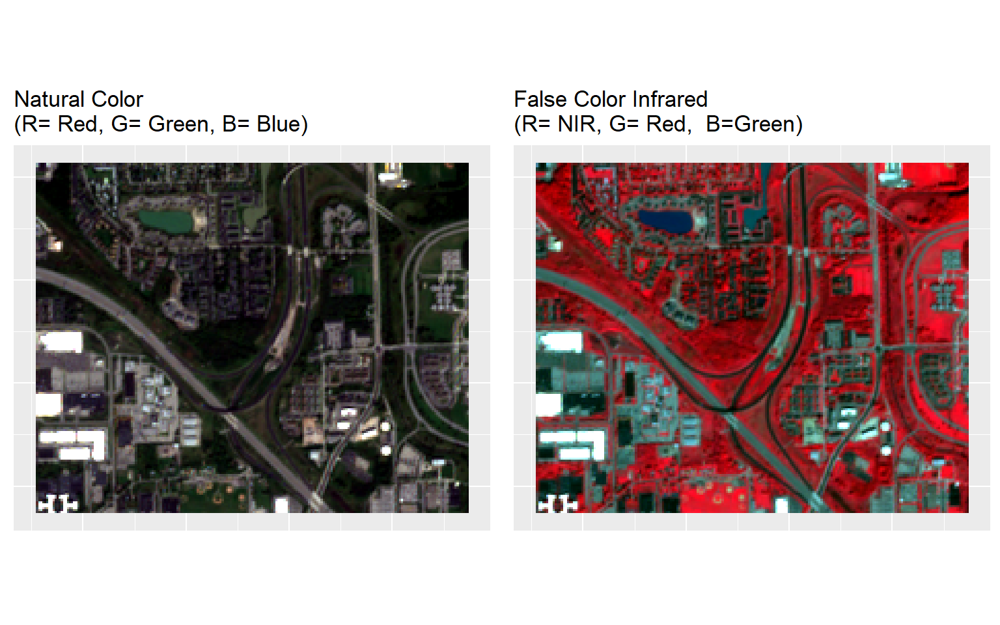

Ground Truth Data Processing
In this lesson we will use a sub-set of Sentinel-2 satellite images covering the north campus of the University at Buffalo, NY taken on September 21st, 2017. We will prepare them for for pixel based classification using machine learning algorithms. The images were already radiometrically and atmospherically corrected using Sen2Cor, a python based processor develop by ESA for formatting and processing (such as atmospheric correction, aerosol optical thickness correction, water vapor retrieval, surface reflectance retrieval from TOA, geometric correction with DEM) for Sentinel-2 Level 2A imagery. All bands were re-sampled at 10 meter resolution in SNAP Toolboxes.
We will train the machine learning models with 5 feature classes extracted from Google Earth imagery: (1) parking/road/pavement, (2) building, (3) trees/bushes, (4) grass, and (5) water bodies. We used on-screen digitization in QGIS to create polygons representing members of these feature classes. First, we will convert the polygons to a 2.5x 2.5 meter raster grid, and then convert them to spatial points. Next, we will extract values from the B2, B3, B4, B5, B6, B7, B8, B8A, B11 and B12 bands and add them to the spatial point data set that we will use for training, validation and testing the models. We will also use all bands to create a prediction grid point data set for predicting land-use classes.
The data could be available for download from here.
Load R packages
library(rgdal) # spatial data processing
library(raster) # raster processing
library(plyr) # data manipulation
library(dplyr) # data manipulation
library(RStoolbox) # ploting spatial data
library(RColorBrewer)# color
library(ggplot2) # ploting
library(sp) # spatial data
library(gridExtra)
library(tidyverse) # data # Define data folder
dataFolder<-"D://Dropbox//Spatial Data Analysis and Processing in R//DATA_09//DATA_09//"Load multi-band raster
#s=stack(BLUE, GREEN, RED, NIR,SWIR1,SWIR2)
multi=stack(paste0(dataFolder,".\\Sentinel_2\\multi_bands.tif"))Groundtruth data processing
Import training polygon layer
poly <- shapefile(paste0(dataFolder, ".\\Sentinel_2\\GroundTruth_data.shp"))
# define projection
crs(poly) <- "+proj=utm +zone=17N +ellps=WGS84 +datum=WGS84 +units=m +no_defs" Convert polygon to raster
Before converting land use polygon file raster, we will extent extent of any band of Sentinel-2 to set raster extent. We use B2 for define raster extent.
b2<-raster(paste0(dataFolder,".\\Sentinel_2\\B2.tif"))
# # define projection
crs(b2) <- "+proj=utm +zone=17N +ellps=WGS84 +datum=WGS84 +units=m +no_defs"
extent=extent(b2)Convert to raster (2.5 m grid size)
r <- raster(extent, resolution=2.5,
crs = '+proj=utm +zone=17N +ellps=WGS84 +datum=WGS84 +units=m +no_defs ')
extent(r) <- extent(poly)
rp <- rasterize(poly, r, 'Class_ID')plot(rp, main="Ground truth data")
Convert raster to data.frame and rename colum to “layer”" to Class_ID
rp.df <- as.data.frame(rasterToPoints(rp))
colnames(rp.df)[3] <- 'Class_ID'Create a Spatial point Data frame
xy <- rp.df[,c(1,2)]
point.SPDF <- SpatialPointsDataFrame(coords = xy,
data=rp.df,
proj4string = CRS("+proj=utm +zone=17N +ellps=WGS84 +datum=WGS84 +units=m +no_defs"))Load multi-band raster
multi=stack(paste0(dataFolder,".\\Sentinel_2\\multi_bands.tif"))
# rename the bands
names(multi) <- c("B2", "B3","B4","B5","B6","B7","B8","B8A","B11","B12")Plot RGB maps
# Natural Color
p1<-ggRGB(multi, r=3, g=2, b=1, stretch = "lin")+
theme(axis.title.x=element_blank(),
axis.text.x=element_blank(),
axis.ticks.x=element_blank(),
axis.title.y=element_blank(),
axis.text.y=element_blank(),
axis.ticks.y=element_blank())+
ggtitle("Natural Color\n(R= Red, G= Green, B= Blue)")
# False Color image
p2<-ggRGB(multi, r=7, g=3, b=2, stretch = "lin")+
theme(axis.title.x=element_blank(),
axis.text.x=element_blank(),
axis.ticks.x=element_blank(),
axis.title.y=element_blank(),
axis.text.y=element_blank(),
axis.ticks.y=element_blank())+
ggtitle("False Color Infrared\n(R= NIR, G= Red, B=Green)")
grid.arrange(p1, p2, nrow = 1)
Extract raster values to point file
point.df <- raster::extract(multi, point.SPDF, df=TRUE, method='simple')Combine with data frame
point.mf<-cbind(rp.df,point.df)
head(point.mf)## x y Class_ID ID B2 B3 B4 B5 B6 B7 B8 B8A B11
## 1 678191.5 4764069 2 1 616 682 655 767 1669 1669 1922 2414 1726
## 2 678194.0 4764069 2 2 616 682 655 767 1669 1669 1922 2414 1726
## 3 678196.5 4764069 2 3 616 682 655 767 1669 1669 1922 2414 1726
## 4 678191.5 4764067 2 4 616 682 655 767 1669 1669 1922 2414 1726
## 5 678194.0 4764067 2 5 616 682 655 767 1669 1669 1922 2414 1726
## 6 678196.5 4764067 2 6 616 682 655 767 1669 1669 1922 2414 1726
## B12
## 1 1115
## 2 1115
## 3 1115
## 4 1115
## 5 1115
## 6 1115Keep values belong only to 5 classes:
point<-point.mf %>%
dplyr:: select(x,y,Class_ID, B2, B3, B4, B5, B6,B7,B8,B8A,B11,B12) %>%
filter(Class_ID >0) Add class ID and save as a CSV file
# Import lnaduse ID file
ID<-read.csv(paste0(dataFolder,".\\Sentinel_2\\Landuse_ID.csv"), header=T)
# Join with point data frame
point.gt<-merge(point, ID, by="Class_ID", type="inner")
# rearrange the data
point.gt.df<-cbind(point.gt[c(2:3)],point.gt[c(4:13)],Class=point.gt$Class,Landuse=point.gt$Landuse,Class_ID=point.gt$Class_ID)
# omit missing values
newdata <- na.omit(point.gt.df)
str(newdata)## 'data.frame': 23945 obs. of 15 variables:
## $ x : num 679868 679423 679866 678798 678436 ...
## $ y : num 4763045 4763616 4763045 4763693 4762906 ...
## $ B2 : num 1195 1127 1195 570 1467 ...
## $ B3 : num 1219 1347 1219 449 1588 ...
## $ B4 : num 1410 1422 1410 547 1741 ...
## $ B5 : num 1319 1307 1319 657 1767 ...
## $ B6 : num 1205 2176 1205 822 1705 ...
## $ B7 : num 1205 2176 1205 822 1705 ...
## $ B8 : num 1453 2260 1453 678 1891 ...
## $ B8A : num 1467 2785 1467 894 1798 ...
## $ B11 : num 1632 2036 1632 1333 2230 ...
## $ B12 : num 1490 1481 1490 1305 2145 ...
## $ Class : Factor w/ 5 levels "Class_1","Class_2",..: 1 1 1 1 1 1 1 1 1 1 ...
## $ Landuse : Factor w/ 5 levels "Building","Grass",..: 3 3 3 3 3 3 3 3 3 3 ...
## $ Class_ID: num 1 1 1 1 1 1 1 1 1 1 ...
## - attr(*, "na.action")= 'omit' Named int 580 599 600 601 664 1066 1069 1070 1078 1090 ...
## ..- attr(*, "names")= chr "580" "599" "600" "601" ...# save as CSV file
write.csv(newdata, paste0(dataFolder, ".\\Sentinel_2\\point_data.csv"), row.names=F)Grid Data Processing
First, we will empty point data frame, will use Band B2
grid.point <- data.frame(rasterToPoints(b2))
# Remove B2 column, just keep x & y
grid.point$B2<-NULL
# define co-ordinates and projection
coordinates(grid.point) <- ~x + y
projection(grid.point) <- CRS("+proj=utm +zone=17N +ellps=WGS84 +datum=WGS84 +units=m +no_defs")Extract all bands values to grird point:
df.grid<- raster::extract(multi, grid.point, df=TRUE, method='simple')Combine with grid.df (we need to add xy coordinated for mapping) and write as a CSV file:
grid<-cbind(as.data.frame(grid.point),df.grid)
write.csv(grid, paste0(dataFolder, ".\\Sentinel_2\\prediction_grid_data.csv"), row.names=F)
head(grid)## x y ID B2 B3 B4 B5 B6 B7 B8 B8A B11 B12
## 1 677775 4764065 1 1673 1734 1568 999 1033 1033 1694 1226 1440 1413
## 2 677785 4764065 2 920 668 768 549 503 503 732 681 809 862
## 3 677795 4764065 3 301 354 357 549 503 503 399 681 809 862
## 4 677805 4764065 4 300 356 339 784 715 715 416 743 1098 1158
## 5 677815 4764065 5 645 466 613 784 715 715 587 743 1098 1158
## 6 677825 4764065 6 1966 2244 2126 1900 1787 1787 1900 1946 2229 2330Split the dataset into training and test dataset
Before model fitting, the ground truth point data will be randomly split into two parts. Seventy percent will be used for training the machine learning based-models and 30% will be used for evaluation of the models. For data splitting, we will use the caret (short for _C_classification _A_nd _RE_regression _T_raining) package
If you want to install this package, use following R-code:
#install.packages("caret", dependencies = c("Depends", "Suggests"))Laod caret package:
library(caret) ## Loading required package: lattice##
## Attaching package: 'caret'## The following object is masked from 'package:purrr':
##
## liftSplit data:
set.seed(3456)
# set training index
trainIndex <- createDataPartition(newdata$Landuse, p = .7,
list = FALSE,
times = 1)
train<- newdata[ trainIndex,]
test<- newdata[-trainIndex,]
# Export as CSV files
write.csv(train, paste0(dataFolder,".\\Sentinel_2\\train_data.csv"),row.names=F)
write.csv(test, paste0(dataFolder, ".\\Sentinel_2\\test_data.csv"), row.names=F)rm(list = ls())